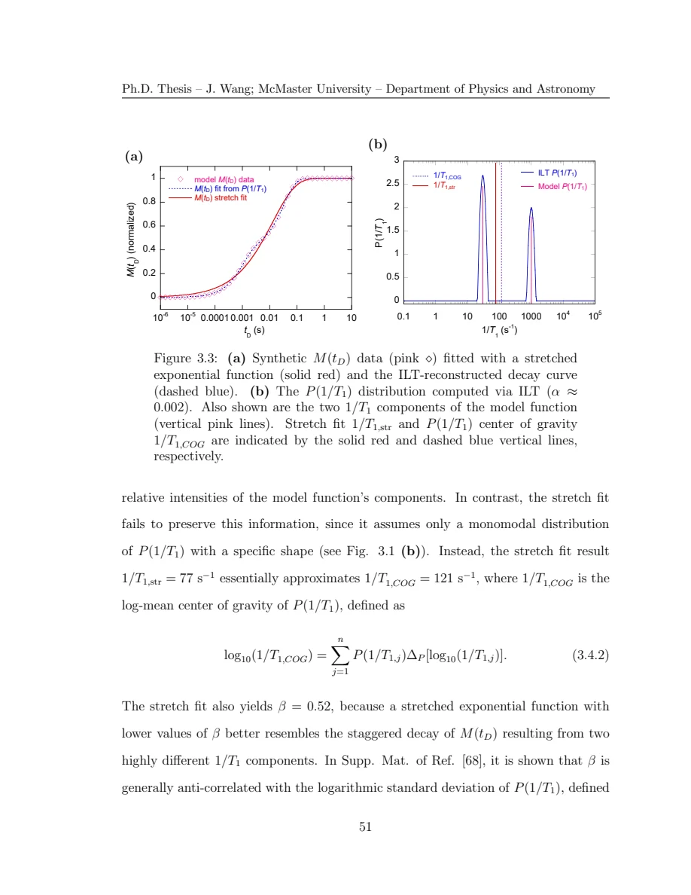
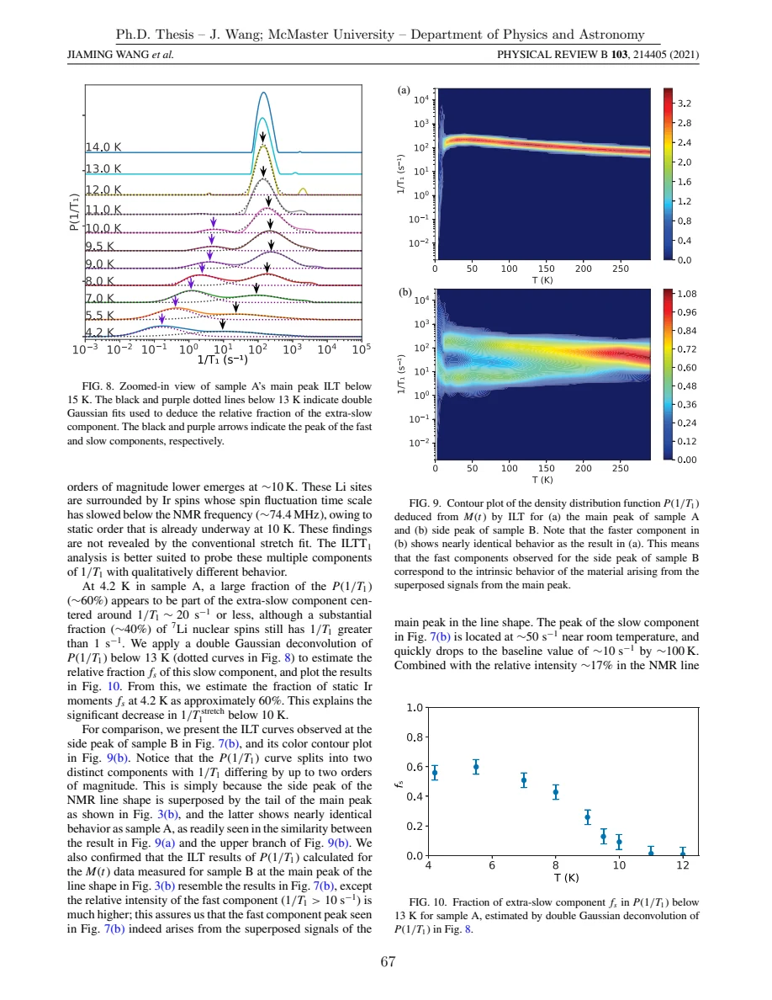
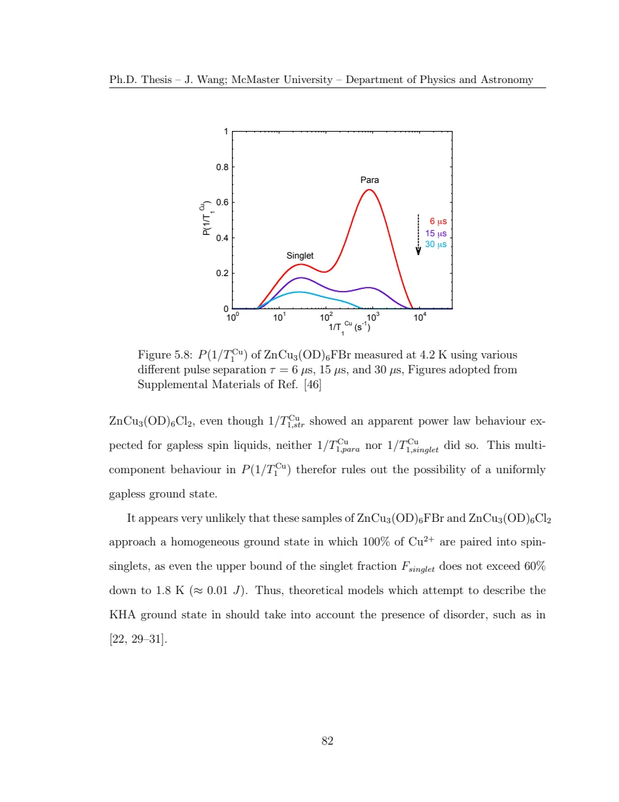
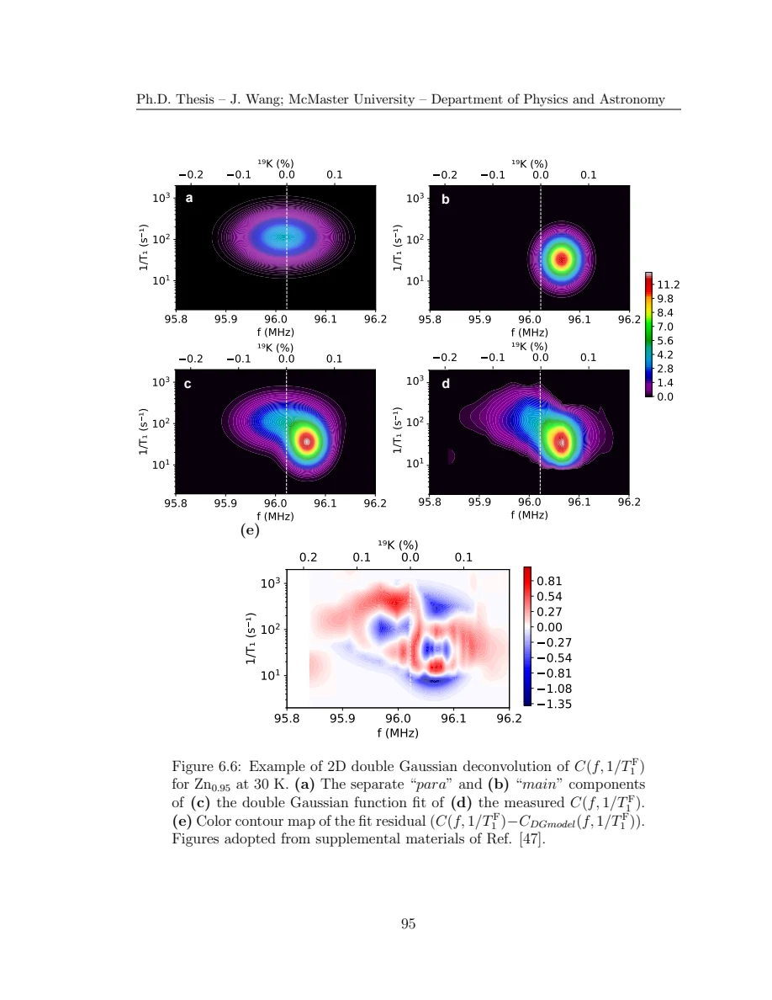

Wang · supplied source 2024 · PhD thesis
Local Physics of Disordered Quantum Spin Liquid Systems Individuated by NMR and Inverse Laplace Transform 1/T₁ Analysis
Resolve a distribution before interpreting its average: the thesis combines local shifts, relaxation spectra and frequency–rate maps to study heterogeneous magnetism.
The question: How can nuclear resonance distinguish coexisting local spin environments when disorder obscures a candidate spin liquid’s bulk response?
Before you start: the terms you need
- Quantum spin liquid candidate: a material tested against a quantum-disordered model; a null ordering signal is insufficient identification.
- K: local resonance shift, sensitive to a coupling-weighted static susceptibility.
- 1/T₁: recovery rate that samples fluctuations in the probe frequency window.
- ILT: constrained, regularized inference of a relaxation-rate distribution from recovery data.
- log-rate density: probability is the area in d log₁₀(1/T₁), not peak height.
See → explain → check
Follow the idea in 4 pictures.
Picture 1 / 4
The same curve can hide different nuclei
Look for: The measured recovery adds signals from many environments.
Swipe across the picture to read every label, or enlarge it below.
- Green: slow recovery (30 s⁻¹)
- Orange: fast recovery (1000 s⁻¹)
- Purple: weighted sum (slow weight 0.60)
Chosen two-exponential teaching calculation, not a fit to the thesis data.
A characteristic stretched rate does not uniquely identify their local dynamics.
Check the original: Original PDF p. 55 · Original PDF p. 57 · Original PDF p. 64 · Original PDF p. 65
Picture 2 / 4
Infer with explicit constraints
Look for: The forward kernel, positivity and regularization all affect the inference.
Swipe across the picture to read every label, or enlarge it below.
- Recovery data + kernel
- Nonnegative regularized inversion
- Rate distribution + checks
An inference pipeline, not the author’s analysis program.
ILT avoids a predetermined peak count but does not remove model assumptions or experimental limits.
Check the original: Original PDF p. 59 · Original PDF p. 60 · Original PDF p. 63 · Original PDF p. 67
Picture 3 / 4
Add frequency to the rate axis
Look for: Different local shifts may carry different relaxation components.
Swipe across the picture to read every label, or enlarge it below.
- Frequency / shift
- Log relaxation rate
- Overlapping environments
Qualitative ellipses in arbitrary coordinates; no measured map or invented fit.
Frequency–rate maps retain correlations that either one-dimensional projection can hide.
Check the original: Original PDF p. 69 · Original PDF p. 70 · Original PDF p. 71 · Original PDF p. 73 · Original PDF p. 106
Picture 4 / 4
Test three different material stories
Look for: Ordering, singlet-like suppression and defect polarization are different interpretations.
Swipe across the picture to read every label, or enlarge it below.
- Ag₃LiIr₂O₆
- Cu NQR in kagome systems
- F NMR in Zn-barlowite
Historical source synthesis, not proof that every spin-liquid candidate has the same ground state.
The 2024 thesis supports heterogeneous states in the supplied samples, with probe and inference limits.
Check the original: Original PDF p. 82 · Original PDF p. 94 · Original PDF p. 110 · Original PDF p. 116 · Original PDF p. 118
Predict before revealing
ILT reconstructs the measured recovery accurately. What additional issue still needs checking?
Choose an answer, then compare the reasoning.
Forward agreement is necessary, but several distributions can fit noisy finite-window data; stable regularization and physically appropriate acquisition/kernel checks remain essential.
Read the answer
The kernel, regularization, noise, delay window and observable population still constrain the inference. Forward agreement is necessary, but several distributions can fit noisy finite-window data; stable regularization and physically appropriate acquisition/kernel checks remain essential.
Go deeper Follow the full argument
The organizing question is local heterogeneity
The thesis studies Ag₃LiIr₂O₆, herbertsmithite and Zn-barlowite as candidate realizations of frustrated magnetism. Its main methodological claim is that spatially different environments can be hidden when an experiment is reduced to one bulk susceptibility, one resonance-peak position or one fitted relaxation rate. Chemical inclusions, stacking faults and magnetic defects matter because they change nearby spins nonuniformly. NMR and NQR let the author compare local static response through shifts with low-frequency dynamics through recovery. The guide treats the research as a historical 2024 investigation of particular samples. A material label or absence of a sharp transition does not by itself establish quantum spin-liquid order.
Original PDF p. 15 · Original PDF p. 20 · Original PDF p. 28 · Original PDF p. 116
Understand what is actually measured
A pulse sequence measures a magnetization recovery curve at a selected resonance frequency and with a finite echo delay. The frequency selects a band of nuclei, and the echo timing can suppress nuclei with fast transverse decay. Thus the measured ensemble may differ from the complete material. The local shift contains spin and chemical contributions. The recovery rate depends on fluctuating hyperfine fields transverse to the nuclear quantization axis and on the momentum-dependent coupling form factor. A smaller measured rate can arise from a gap, a geometrical cancellation or motion leaving the probe frequency window. The thesis’s complementary observables are needed to distinguish these possibilities.
Original PDF p. 33 · Original PDF p. 40 · Original PDF p. 43 · Original PDF p. 47 · Original PDF p. 48 · Original PDF p. 50 · Original PDF p. 80 · Original PDF p. 94
Why the inverse problem matters
If nuclei independently relax with several rates, their measured recoveries add. A stretched-exponential fit compresses this into a characteristic rate and a stretch parameter. That can be a useful description, but it does not generally identify the mean, median, mode or distinct populations of the underlying distribution. The thesis discretizes rates on a logarithmic grid and solves a nonnegative regularized inverse problem. Its Tikhonov penalty discourages unstable spikes. Too little regularization follows noise; too much can smear components. The inversion therefore retains assumptions about the recovery kernel, rate window, noise and independent populations even though it avoids prescribing one specific distribution shape or a fixed number of peaks.
Original PDF p. 55 · Original PDF p. 57 · Original PDF p. 58 · Original PDF p. 59 · Original PDF p. 60 · Original PDF p. 61 · Original PDF p. 63 · Original PDF p. 67
A controlled example before materials
The author’s synthetic example uses a normalized saturation-style recovery with 60% of the weight at 30 s⁻¹ and 40% at 1000 s⁻¹. A regularized inversion recovers two components under the stated high-SNR setup, whereas a stretched fit returns a single intermediate characteristic rate. This is an algorithm demonstration with known synthetic truth, not an experiment on a spin liquid. The reported log-mean center is a geometric weighted mean, not the arithmetic mean of rates. Forward-reconstructing the recovery from the inferred distribution is an essential consistency check, but a good reconstruction alone does not prove every inferred peak is resolved or physical.
Original PDF p. 64 · Original PDF p. 65 · Original PDF p. 66 · Original PDF p. 67
Read the iridate as a sample comparison
Ag₃LiIr₂O₆ is synthesized through topochemical exchange, which can introduce disorder. The cleaner sample A shows a sharp recovery-rate maximum near 9 ± 1 K and supporting magnetic-order evidence. The thesis’s ILT analysis interprets a substantial low-temperature fraction as static on the NMR time scale, with other regions still fluctuating. The more disordered sample B has an additional lithium resonance component, around 17% of the line intensity, associated with unwanted Ag inclusions and suppressed local magnetic response. The main line in B resembles the cleaner regions of A. The comparison shows why disorder can weaken a visible ordering signature. It does not show that weak susceptibility or small 1/T₁ necessarily identifies a spin liquid.
Original PDF p. 74 · Original PDF p. 76 · Original PDF p. 77 · Original PDF p. 78 · Original PDF p. 79 · Original PDF p. 80 · Original PDF p. 81 · Original PDF p. 82
The kagome copper results retain two kinds of dynamics
The Cu NQR experiments examine Zn-barlowite and herbertsmithite without the large applied-field powder quadrupole complication. Below roughly 30 K, a slowly relaxing component separates from a persisting faster paramagnetic component. The thesis interprets the slow component as local singlet formation with spatially varying gaps. This differs from reducing the entire sample to a uniformly gapped or uniformly gapless response. Importantly, the inferred slow fraction is measured with finite echo delay and at the NQR peak. The faster-T₂ paramagnetic nuclei are relatively suppressed, so the quoted singlet fraction is an upper-bound estimate under the stated conditions, rather than an exact census of all Cu spins.
Original PDF p. 84 · Original PDF p. 87 · Original PDF p. 91 · Original PDF p. 92 · Original PDF p. 94 · Original PDF p. 95 · Original PDF p. 96
Fluorine maps connect local shift to local dynamics
In Zn-barlowite, fluorine has spin one-half and avoids a first-order electric-quadrupole splitting. It couples to as many as twelve neighboring kagome Cu spins, which makes its signal a spatially weighted local sum rather than a single-Cu measurement. Repeating recovery measurements across the broad line builds a frequency–rate map. The thesis separates a narrow main component from a broad faster component whose shifts and behavior resemble the Cu₄ parent material. A two-Gaussian deconvolution estimates the broad component near 60% at 2 K and supports an interpretation of domains influenced by interlayer Cu defects. The drawing of a domain’s radius is conceptual; the experiment does not directly image a sharp real-space boundary or determine the detailed spin pattern.
Original PDF p. 99 · Original PDF p. 100 · Original PDF p. 103 · Original PDF p. 106 · Original PDF p. 108 · Original PDF p. 109 · Original PDF p. 110 · Original PDF p. 111 · Original PDF p. 112 · Original PDF p. 114 · Original PDF p. 115
Study the numerical appendices without treating them as certainty
Appendix A explains singular-value compression of the forward kernel. Appendix B chooses regularization using a residual criterion tied to noise and a lower-bound heel criterion intended to accommodate systematic effects. The thesis also holds α fixed across related maps to keep regularization broadening comparable. A fixed α is a deliberate analysis choice, not a guarantee that every temperature or frequency has equal physical resolution. Population weights, mode labels, finite-delay visibility and selected-frequency coverage remain necessary checks. The chapter routes below turn those assumptions into concrete questions so that the source’s methodological advantages can be used without overlooking its inference limits.
Original PDF p. 119 · Original PDF p. 120 · Original PDF p. 121 · Original PDF p. 122 · Original PDF p. 123
Translate the mathematics Essential equations and their meaning
M = KP + E; P ≥ 0
Symbols: M: sampled recovery vector; K: transition-specific recovery kernel; P: nonnegative log-rate bin weights; E: noise.
The rate histogram is inferred conditional on K, acquisition times and the represented rate range.
Pα = arg min(P ≥ 0) {‖M − KP‖² + α‖P‖²}
Symbols: α: positive regularization strength; ‖·‖: Euclidean norm.
This source uses a norm penalty on the weights, not a derivative roughness penalty. Its artificial broadening must not be mistaken for a measured intrinsic width.
M(t) = 1 − 0.6 e^(−30t) − 0.4 e^(−1000t)
Symbols: t: seconds; rates: s⁻¹; unit equilibrium signal and saturation-style preparation.
The thesis’s synthetic example illustrates two populations. It is separate from the source’s material recovery kernels and measured data.
log₁₀ RCOG = Σⱼ wⱼ log₁₀ Rⱼ, with Σⱼwⱼ = 1
Symbols: Rⱼ: rate in bin j; wⱼ: normalized probability weight per log-rate bin.
The center is a geometric mean rate. Specify normalization and do not substitute an arithmetic mean.
Read the evidence Guided original source pages

Original PDF p. 65

Original PDF p. 81

Original PDF p. 96

Original PDF p. 109
What the evidence supports—and where it stops
- The conclusions describe the supplied thesis and sample histories, not a complete or current survey of QSL materials.
- ILT retains recovery-kernel, independent-population, noise, finite-window and regularization assumptions.
- A low 1/T₁ can reflect a gap, coupling cancellation or changed fluctuation time scale; context matters.
- Cu singlet weights are observable upper-bound estimates; fluorine domain weights concern a different probe geometry.
- Some introductory formulae contain printed sign or convention problems; chapter notes distinguish these from the later working recovery kernel.
Explain it back.
Try answering aloud before opening the explanation.
Does no observed order establish a QSL?
No. Disorder, freezing, insufficient sensitivity and mixed environments can obscure an ordering signature. Independent positive evidence and the relevant probe windows remain necessary.
Why is a stretched rate different from a local rate?
A stretched recovery combines many environments through a constrained functional form. Its fitted characteristic value need not equal any population’s local rate or the distribution’s geometric mean.
What does a peak area in P(R) mean?
Integrate in d log₁₀R with the source’s normalization. Peak height alone is not a population fraction, and echo/frequency selection can bias that observable fraction.
What information does C(f,R) add?
It joins local resonance frequency with relaxation rate. It can distinguish populations that overlap in frequency or are missed by one fixed-frequency recovery.
Study the thesis in chapter units.
Each unit connects source passages, essential equations, original figures and answered recall.
Wang · 2024 · Chapter unit
1 · What counts as a spin-liquid candidate?
A frustrated model, a real material and a diagnostic measurement are different levels of evidence.
2 pictures · detailed notes · answered recallWang · 2024 · Chapter unit
2 · Translate the nuclear observables
Shift, quadrupole frequency, T₁ and T₂ constrain different properties and populations.
2 pictures · detailed notes · answered recallWang · 2024 · Chapter unit
3 · From recoveries to a log-rate distribution
ILT needs a forward kernel and a stable constrained inversion, even when peak count is left open.
2 pictures · detailed notes · answered recallWang · 2024 · Chapter unit
4 · Check the method against known synthetic truth
Known synthetic truth tests the inversion under chosen conditions; it does not certify every material peak.
2 pictures · detailed notes · answered recallWang · 2024 · Chapter unit
5 · Keep frequency and relaxation together
A joint distribution retains correlations; its marginals and selected slices answer different questions.
2 pictures · detailed notes · answered recallWang · 2024 · Chapter unit
6 · Ag₃LiIr₂O₆: disorder can obscure order
Sample comparison and local distributions reveal why a weak bulk signature is inconclusive.
2 pictures · detailed notes · answered recallWang · 2024 · Chapter unit
7 · Cu NQR: singlet-like and paramagnetic regions
The observed Cu mixture is heterogeneous, and finite echo delay biases its inferred weights.
2 pictures · detailed notes · answered recallWang · 2024 · Chapter unit
8 · F NMR: correlate shift, rate and defect influence
The broad fast component is visible in joint space and supports a defect-domain interpretation.
3 pictures · detailed notes · answered recallWang · 2024 · Chapter unit
9 · Appendices: stabilize the inverse and audit the conclusion
Regularization is an explicit analysis decision; reliable interpretation tests stable features and experimental visibility.
2 pictures · detailed notes · answered recallSource version, reading coverage and preservation
All substantive text in Chapters 1–7, the reprinted research article and numerical appendices read; original working kernels, equations and key result figures visually checked.
Reviewed body pages: 15, 16, 17, 18, 19, 20, 21, 22, 23, 24, 25, 26, 27, 28, 29, 30, 31, 32, 33, 34, 35, 36, 37, 38, 39, 40, 41, 42, 43, 44, 45, 46, 47, 48, 49, 50, 51, 52, 53, 54, 55, 56, 57, 58, 59, 60, 61, 62, 63, 64, 65, 66, 67, 68, 69, 70, 71, 72, 73, 74, 75, 76, 77, 78, 79, 80, 81, 82, 84, 85, 86, 87, 88, 89, 90, 91, 92, 93, 94, 95, 96, 97, 98, 99, 100, 101, 102, 103, 104, 105, 106, 107, 108, 109, 110, 111, 112, 113, 114, 115, 116, 117, 118, 119, 120, 121, 122, 123. Personal acknowledgements omitted from teaching content. Bibliographies and external supplements not independently re-read; only material actually present in the thesis is covered.
Source SHA-256: 80ad8aaad2ce3f48320bef046c30907939f8018990292aa5ebb7e5269d912da2. Original file bytes preserved locally; public scientific page images are rendered from that source.
Thesis - Wang - 2024 - Disordered spin liquids - NMR and inverse Laplace analysis.pdf